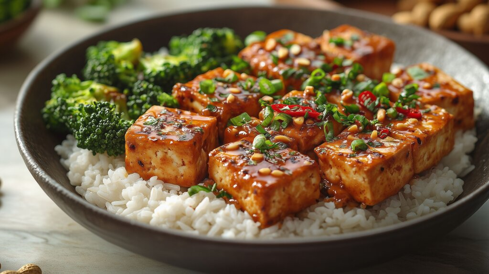

Navigate between highlighted sections with your voice.

Title: Hoisin Tofu and Broccoli
Prep time: 15 min
Cook time: 10 min
Servings: 4
Ingredients
One block of firm tofu (400g, extra firm will work
too)
1 head (300 grams stemless) of Broccoli
2-4 cloves of garlic, diced
1/2 cup light soy sauce
1 cup dark soy sauce
2 tablespoons sugar
2 tablespoons rice vinegar (or any non-balsamic
vinegar)
1/4 cup vegetable stock (or water)
2 tablespoons Shaoxing wine or dry cherry (optional)
1 tablespoon hoisin sauce
1/2 tablespoon cornstarch
1/2 tablespoon sesame oil
2.5 tablespoon peanut oil (any oil will do)
water
50-100g ginger, diced (optional)
Directions
Cut the tofu into 3/4" (2 cm) cubes and place it in
a sealable ziplock bag.
Combine 1/4 cup soy sauce, 1/2 teaspoon dark soy
sauce, sugar and rice vinegar ingredients in a bowl
and stir to mix.
A food prep rectangular tupperware could work very
well, as you need less marinade to submerge the
tofu. Add tofu and refrigerate for half an hour.
Combine vegetable stock, remaining soy sauce, wine,
sesame oil, cornstarch and hoisin sauce into a bowl
and stir until the cornstarch is dissolved.
Cut the florets off the stalks of broccoli. Cut into
1cm chunks. Wash and drain if needed.
Heat 1/3 cup of water in a large pan over
medium/high heat until boiling. Add broccoli and
cover with a lid. Steam for 2-3 minutes depending on
how hard you want it, then drain and rinse the
remaining water off. Put the broccoli aside.
Add 2 tbsp of oil on the same pan. Cook tofu until
the bottom is golden brown, flip and repeat. Stir a
few times, then move to the side of the pan.
Add more oil, garlic, ginger. Stir until it releases
fragrance - generally less than a minute, then stir
to combine the two.
Cook together until sauce thickens, then add
broccoli and stir to combine.